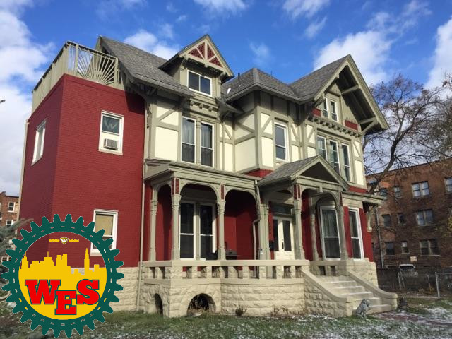
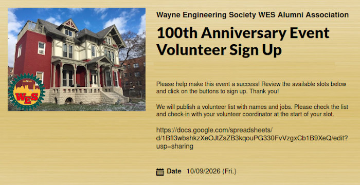

The original engineering society, Epsilon Sigma, was founded on December 12, 1926. This year marks the 100th anniversary of the founding. The new name is Wayne Engineering Society (WES).
Alumni and student members will celebrate the 100-year anniversary on Friday, October 9, 2026, 5pm to 8pm. The usual monthly Friday poker will take place immediately after, from 8pm to 10pm.
EVENT PROGRAM
Heavy hors d'oeuvres
Self tour of renovations & repairs
Zoom with alumni from everywhere
Slideshow bingo
Greg's poker
Other alumni games
Greg's poker continues
Other games continue
Location: Tom Adams Field, Detroit, MI
Broadcast/Streaming: FloFootball
* * EARLY REGISTRATION THRU AUG 31 * *
Register on Zeffy at the link you received in email. Zeffy -- WES 100th Anniversary Event
Early registration is $30 during August. After August, late registration will be $40. Registration deadline is September 15. See below for additional optional donation tiers.
(ends Aug 31)
(Sep 1 to Sep 15)
Sep 15
* * SIGN UP TO VOLUNTEER * *
Sign Up to bring items to the event or volunteer to help. SignUp Genius -- WES 100th Anniversary Event

Frequently Asked Questions
What are donation tiers?
Any donation is accepted. Century Club tier is $100. The donation goes to the Alumni Association for house improvements. Alternatively, you can pay for the event and make a donation to the Endowment Fund (Endowment Fund Giving Guide). Century Club donor who attend get an exclusive early guided tour of the house recent improvements.
What kind of food will be at the event?
Catered heavy hours d'oeuvres in a strolling dinner setting. (Thanks to Don and Carol for arranging the food and to Mark N. and Sheila for helping with arrangements and setup.)
What will be on the tour?
We will have a walking self-guided tour of recent house improvements including the front fence, the electrical, the kitchen renovation, the third-floor shower and bathroom, and the boiler room. Each tour stop will have web app info describing the history and story behind the project. Virtual Zoom attendees will also have access to the tour app including info for each tour stop. (Thanks to Ron, Bryan, Don, Mark N., Jerry for detailed information that will go into the tour stops.)
How can alumni donate? What are the donation options?
Information about donating on the registration site and below.
You can donate to the house restoration and maintenance, or you can donate to the Endowment Fund that goes toward Scholarships. House donations can go through the registration site, or GoFundMe site and go to the Alumni Association (treasurer Bryan). Endowment Fund donations go through the College of Engineering using these instructions: Endowment Fund Giving Guide. (Thanks to Dave for setting up GoFundMe and thanks to Don for setting up the Endowment Fund.)
How can I make tax-deductible donations to the Endowment Fund for Scholarships?
See the details in the Endowment Fund Giving Guide.
Who is planning this event?
The planning committee has members from the EB Alumni Association, the Housing Corp., the Endowment Fund, and the WES Student members. (See answers below for how-to donate.)
Can alumni stay for poker/games afterwards?
Yes. We encourage alumni to join the monthly poker 8pm to 10pm. (Yes, we know this is the SECOND Friday instead of the FIRST Friday. We reschedule the First-Friday poker just this once). If you want to organize and host other games, please let us know so we can reserve space. Bringing your own folding table and plan to some during set up. (Thanks to the poker "regulars" for agreeing to move poker from the first Friday to the second Friday this one time.)
Is this event for members only?
Yes. We are hosting other events on other days for alumni families / spouses / partners / SO's, such as the not-freeze-your-buns-off game the next day on Saturday, October 10.
Are students paying to attend? How do I help "sponsor" a student to attend?
The Alumni Association is subsidizing the cost for food for the ten student members to attend. You can help sponsor a student my making an extra donation to the Alumni Assocation on the registration site.
What are the virtual attendance options?
For those who cannot attend in-person, We will host a Zoom call all during the event bringing together in-person attendees and virtual attendees. Virtual attendees will have access to the slideshow and a virtual tour of the recent house renovations. Virtual attendees still need to register to attend. You will receive an email with your Zoom link. (Thanks to Tony for volunteering to host the Zoom virtual event. Thanks to Bryan for lending the on-site equipment to make this possible.)
How do we send brief notes and well wishes to the org?
We will be collection brief notes of well wishes from the alumni to the org. (It's not called "chapter" anymore, it's called "organization".) Include who you are, where you live, your roll number, and a congratulatory note that might include what you do, when you were a student, your memories, etc. We will display the notes at the event. How to submit details to come. (Thanks to Andy for making this suggestion.)
How do I get my photos into the slideshow?
We will have a running slideshow showing photos from the past 100 years. Send photos submissions to Mark C. (Big thanks to Ron, Tony, Andy, Bryan for contributing photos and historical information.)
What is the attire for the event?
Casual professional, or 1920's attire to celebrate the founding in 1926. Activities will include a strolling dinner and house self-tour guided by a tour app.
How can alumni volunteer to bring items or help out at the event?
We need many items and much voluteer help to make this event a success. Alumni can volunteer to help out for an hour during the event, help set up, clean up afterward, or help by bringing needed items. We are seeking photos from the past to include in a running slideshow. We have a SignUp Genius 100th Event with volunteer tasks and also dontation items. Cleaning and set up will take place 2 to 3 hours before the event.
What was the motivation for the event? Where can I find the original Epsilon Sigma documentation from 1937?
Below is the original Wayne University College of Engineering Student Society document from November 1, 1937 that shows that Epsilon Sigma was founded on December 12, 1926.
In June, Amanda found this original College of Engineering Student Society document dated November 1, 1937. Thanks to Amanda for finding this document and sending the scanned image.

What history do we have that pre-dates 1951?
Andy says that, when the EB Chapter was founded in 1951, the first 20 members were student members of Epsilon Sigma, but the next 40 or so were alumni of Epsilon Sigma that were allowed to join EB. Also, Dr. Wales EB22, Dr. Hess EB23, and Dr. Donnelly EB24 were all faculity advisors that joined EB. You will see that most of the members in roll EB25 thru EB60 have graduation dates that pre-date the founding in 1951.
Below is an image from the Spring of 1940. It appears to show 7 initiates, 5 members, and 11 alumni and faculty. This is the oldest photo I have found so far.

Why an event in October?
We chose October over December because of the better weather. If we have enough interest from alumni, we can schedule a Zoom event to take place on the exact anniversary date, Saturday, December 12, 2026.
Are there other alumni events planned?
Yes! The day after the event, Saturday, Oct 10 we will have a family tailgate party for the not-freeze-your-buns-off game.
How do I get on the email list for the monthly alumni newsletter?
Pay your dues. Yearly dues of $10 are due in January. Pay to Bryan. Info is in the newsletter. Send Mark C. your name and email to get on the monthly newsletter email list. The monthly newsletter has been published every month since it's founding in 1951.
How do I learn more about the history of WES?
Mark C. is putting together a timeline of events to display at the 100th Event. Events include Epsilon Sigma founding, founding of alumni first-Friday poker, first house, second house, founding of newsletter, etc.
How old is our house?
Our house was built by Frank Bamlet in 1885 and sold to Frank A. Hubel who owned the house for almost 40 years.
Site Updates
Updated Wednesday, Aug 26th - Updated wording on titles.
Updated Monday, Aug 24th - Added event program.
Updated Thursday, Aug 20th - Added FAQ about house. Updated logo images to include picture of house.
Updated Friday, Aug 14th - Minor rewording/clarification of virtural Zoom.
Updated Wednesday, Aug 12th - Registration is now open.
Updated Tuesday, Aug 11th - Update wording of FAQs